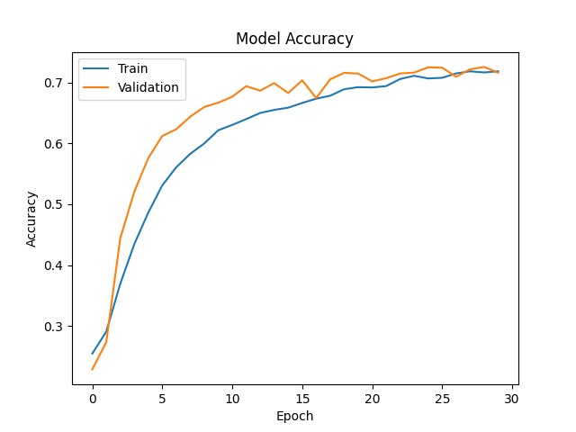
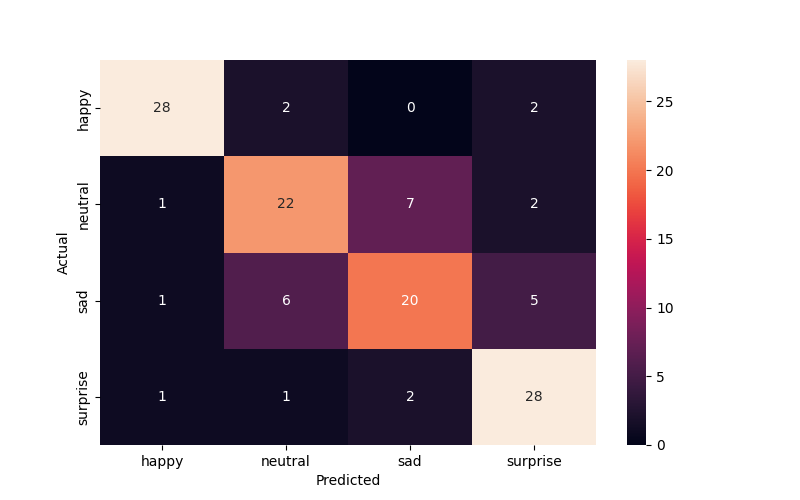
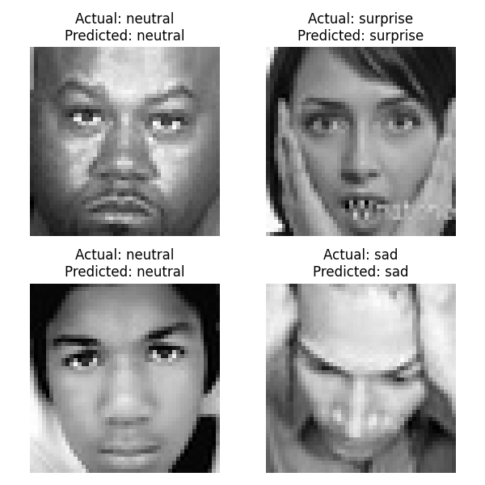

        <html>
        <head><title>Model Summary - 2024-03-03 18:23:49</title></head>
        <body>
        <h1>Model Summary</h1>
        <pre>Model: "sequential"
_________________________________________________________________
 Layer (type)                Output Shape              Param #   
=================================================================
 conv2d (Conv2D)             (None, 48, 48, 256)       6656      
                                                                 
 max_pooling2d (MaxPooling2  (None, 24, 24, 256)       0         
 D)                                                              
                                                                 
 dropout (Dropout)           (None, 24, 24, 256)       0         
                                                                 
 conv2d_1 (Conv2D)           (None, 24, 24, 128)       819328    
                                                                 
 max_pooling2d_1 (MaxPoolin  (None, 12, 12, 128)       0         
 g2D)                                                            
                                                                 
 dropout_1 (Dropout)         (None, 12, 12, 128)       0         
                                                                 
 conv2d_2 (Conv2D)           (None, 12, 12, 64)        73792     
                                                                 
 max_pooling2d_2 (MaxPoolin  (None, 6, 6, 64)          0         
 g2D)                                                            
                                                                 
 dropout_2 (Dropout)         (None, 6, 6, 64)          0         
                                                                 
 conv2d_3 (Conv2D)           (None, 6, 6, 32)          18464     
                                                                 
 max_pooling2d_3 (MaxPoolin  (None, 3, 3, 32)          0         
 g2D)                                                            
                                                                 
 dropout_3 (Dropout)         (None, 3, 3, 32)          0         
                                                                 
 flatten (Flatten)           (None, 288)               0         
                                                                 
 dense (Dense)               (None, 64)                18496     
                                                                 
 dropout_4 (Dropout)         (None, 64)                0         
                                                                 
 dense_1 (Dense)             (None, 32)                2080      
                                                                 
 dropout_5 (Dropout)         (None, 32)                0         
                                                                 
 dense_2 (Dense)             (None, 4)                 132       
                                                                 
=================================================================
Total params: 938948 (3.58 MB)
Trainable params: 938948 (3.58 MB)
Non-trainable params: 0 (0.00 Byte)
_________________________________________________________________
</pre>
        <h2>Test Accuracy</h2>
        <p>
1/4 [======>.......................] - ETA: 0s - loss: 0.4765 - accuracy: 0.8125
4/4 [==============================] - 0s 4ms/step - loss: 0.6023 - accuracy: 0.7656
</p>
        <h2>Accuracy Plot</h2>
        
        <h2>Classification Report</h2>
        <pre>              precision    recall  f1-score   support

       happy       0.90      0.88      0.89        32
     neutral       0.71      0.69      0.70        32
         sad       0.69      0.62      0.66        32
    surprise       0.76      0.88      0.81        32

    accuracy                           0.77       128
   macro avg       0.76      0.77      0.76       128
weighted avg       0.76      0.77      0.76       128

</pre>
        <h2>History</h2>
        <pre>Epoch 1: loss: 1.3833, accuracy: 0.2548, val_loss: 1.3659, val_accuracy: 0.2289
Epoch 2: loss: 1.3660, accuracy: 0.2908, val_loss: 1.3384, val_accuracy: 0.2737
Epoch 3: loss: 1.2699, accuracy: 0.3694, val_loss: 1.2312, val_accuracy: 0.4442
Epoch 4: loss: 1.2005, accuracy: 0.4344, val_loss: 1.1241, val_accuracy: 0.5202
Epoch 5: loss: 1.1259, accuracy: 0.4862, val_loss: 1.0080, val_accuracy: 0.5756
Epoch 6: loss: 1.0549, accuracy: 0.5309, val_loss: 0.9313, val_accuracy: 0.6120
Epoch 7: loss: 0.9967, accuracy: 0.5607, val_loss: 0.8774, val_accuracy: 0.6231
Epoch 8: loss: 0.9586, accuracy: 0.5828, val_loss: 0.8446, val_accuracy: 0.6438
Epoch 9: loss: 0.9224, accuracy: 0.5997, val_loss: 0.8135, val_accuracy: 0.6596
Epoch 10: loss: 0.8886, accuracy: 0.6214, val_loss: 0.8167, val_accuracy: 0.6667
Epoch 11: loss: 0.8715, accuracy: 0.6302, val_loss: 0.7866, val_accuracy: 0.6765
Epoch 12: loss: 0.8572, accuracy: 0.6398, val_loss: 0.7526, val_accuracy: 0.6938
Epoch 13: loss: 0.8392, accuracy: 0.6498, val_loss: 0.7648, val_accuracy: 0.6864
Epoch 14: loss: 0.8263, accuracy: 0.6548, val_loss: 0.7367, val_accuracy: 0.6988
Epoch 15: loss: 0.8163, accuracy: 0.6585, val_loss: 0.7698, val_accuracy: 0.6825
Epoch 16: loss: 0.7969, accuracy: 0.6662, val_loss: 0.7226, val_accuracy: 0.7034
Epoch 17: loss: 0.7910, accuracy: 0.6732, val_loss: 0.7507, val_accuracy: 0.6743
Epoch 18: loss: 0.7768, accuracy: 0.6781, val_loss: 0.7133, val_accuracy: 0.7050
Epoch 19: loss: 0.7611, accuracy: 0.6888, val_loss: 0.6972, val_accuracy: 0.7157
Epoch 20: loss: 0.7492, accuracy: 0.6922, val_loss: 0.6974, val_accuracy: 0.7145
Epoch 21: loss: 0.7463, accuracy: 0.6916, val_loss: 0.7270, val_accuracy: 0.7016
Epoch 22: loss: 0.7346, accuracy: 0.6940, val_loss: 0.7074, val_accuracy: 0.7069
Epoch 23: loss: 0.7277, accuracy: 0.7055, val_loss: 0.6989, val_accuracy: 0.7147
Epoch 24: loss: 0.7170, accuracy: 0.7108, val_loss: 0.6928, val_accuracy: 0.7161
Epoch 25: loss: 0.7182, accuracy: 0.7065, val_loss: 0.6883, val_accuracy: 0.7247
Epoch 26: loss: 0.7171, accuracy: 0.7075, val_loss: 0.6775, val_accuracy: 0.7241
Epoch 27: loss: 0.7050, accuracy: 0.7147, val_loss: 0.7102, val_accuracy: 0.7093
Epoch 28: loss: 0.6900, accuracy: 0.7182, val_loss: 0.6937, val_accuracy: 0.7215
Epoch 29: loss: 0.6900, accuracy: 0.7163, val_loss: 0.6777, val_accuracy: 0.7253
Epoch 30: loss: 0.6899, accuracy: 0.7182, val_loss: 0.6974, val_accuracy: 0.7159
</pre>
        <h2>Confusion Matrix</h2>
        
        <h2>Predicted Images</h2>
        
        </body>
        </html>
        